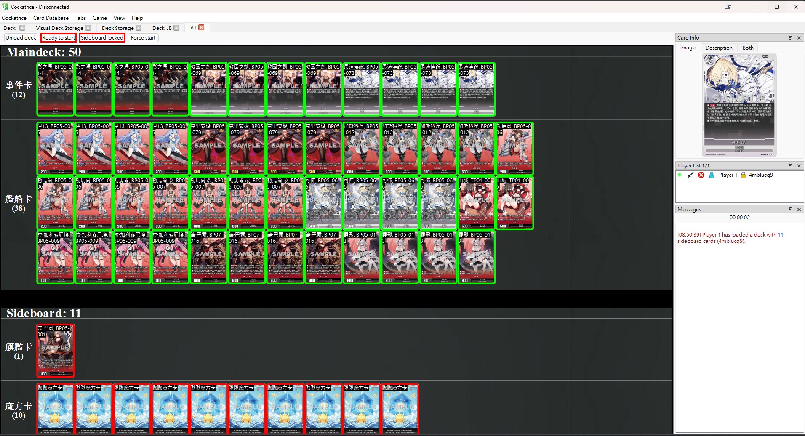

本篇文章及模組內容大量參考這篇文章，特別感謝。
概覽
Cockatrice 是一個免費、開源、跨平台的程式，用於透過網路遊玩桌上卡牌遊戲。
Cockatrice 的功能：
- 大廳功能，可用來尋找對局並與其他玩家聊天
- 套牌編輯器
- 重播功能 —— 自動記錄所有對局以便日後回顧
- 內建鍵盤快捷鍵，可用來操作卡片、加入指示物、追蹤遊戲階段
- 易於編輯的純文字格式套牌清單
- 你可以建立單人對局來測試套牌，或建立本地雙人對局並控制雙方以測試對戰情況
遊戲準備

遊戲中
組牌
安裝
下載Cockatrice並安裝：https://cockatrice.github.io/
打開Cockatrice時，程式會問你要不要更新卡片資料庫(Card Database)，選擇不要(No)。
下載碧藍戰卡資源(20251020更新SP01)
在這裡下載碧藍戰卡資源
百度空間點這裡，提取码: 5x3q
安裝碧藍戰卡資源
- 在選單列中，前往「Card Database → Open custom image folder」。將「AzurLane Card Images」資料夾放在這裡。
- 接著前往「Card Database → Open custom sets folder」。將「01.AzurLane.xml」檔案放在這裡。
- 往上一層路徑，進入 Cockatrice/，將「cards.xml」檔案放在此處。（注意：如果你已經使用 Cockatrice 來玩 Magic，請跳過這個步驟並保留舊的 cards.xml 檔案）。
- 前往 Cockatrice/themes/，將「AzurLane theme」資料夾放在那裡。
Cockatrice/
├── cards.xml
├── customsets/
│ └── 01.AzurLane.xml
├── decks/
├── extra/
├── pics/
│ └── CUSTOM/
│ └── AzurLane Card Images/
├── replays/
├── settings/
└── themes/
└── AzurLane theme/
- 離開並重新開啟Cockatrice。
- 在選單列中，前往「 Cockatrice → Settings → Appearance」並選擇 “AzurLane theme”。
登入
（如果你只是想單人測試套牌，無需註冊伺服器或登入。前往 Actions → Start Local Game 即可開始測試對局。）
由於程式機能限制，需要將魔方卡以及旗艦卡放入額外牌組
- 在選單列中，前往 Actions → Register to Server 並註冊。
- 前往 Actions → Connect 並登入 Rooster Ranges 伺服器（預設伺服器）。
- 登入後，前往 Server 分頁並加入「Other Games」房間。
- 如果你正在尋找對手，可以加入柴郡試煉場的Discord找人。
遊玩與操作
一分鐘快速上手 Cockatrice 操作與對戰指南：https://github.com/Cockatrice/Cockatrice/wiki/One-minute-game-guide
- 抽起始手牌 = Ctrl+M
- 丟骰子 = Ctrl+I
- 查看魔方卡組/旗艦 = Ctrl+F3 或是 右鍵點擊場上 → Sideboard → View Sideboard
- 橫置或重置卡片 = 滑鼠左鍵點兩下
- 重置所有卡片 = Ctrl+U
- 看牌庫頂X張卡 = Ctrl+W
- 將卡牌以背面形式出牌 = Shift+拖曳
- 覺醒/魔方翻面 = 右鍵點擊卡片 → Transform into
- 紅色箭頭 = 右鍵拖曳
- 綠色箭頭 = Shift+右鍵拖曳
- 藍色箭頭 = Alt+右鍵拖曳
- 黃色箭頭 = Ctrl+右鍵拖曳
- 向所有人展示卡牌 = 將卡牌拖曳到左側的 stack 區，或 右鍵 → Turn Over
- 同時選取多張卡牌 = 按住 Shift，點擊並拖曳
- 抽一張牌 = Ctrl+D
- 進入結束階段/結束你的回合 = F10
- 換回合 = Ctrl+Enter